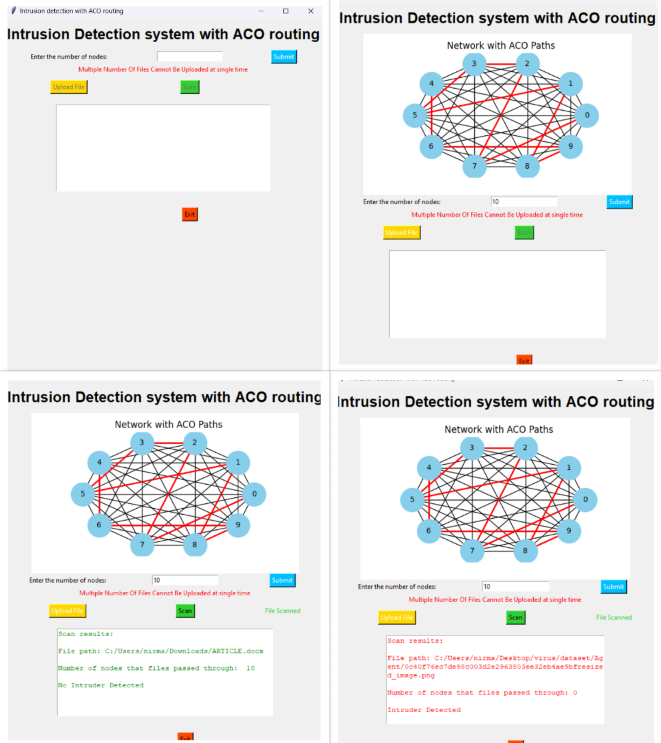

INTRUSION DETECTION FOR SECURE OPTIMAL ROUTING TECHNIQUES IN WIRELESS SENSOR NETWORKS
Wireless sensor networks (WSNs) are extensively used in various applications, serving as a vital component in environmental monitoring. They enable the tracking of crucial parameters such as temperature, humidity, air quality, and pollution levels. Intrusion detection systems (IDS) find wide application across corporate networks, government agencies, and critical infrastructure, effectively identifying unauthorized access attempts, malware, denial-of-service attacks, and other suspicious activities. Anomaly detection plays a crucial role in WSNs, aiding in the identification of uncommon occurrences and atypical patterns within collected data. These anomalies can indicate sensor malfunctions, equipment failures, or potential security risks, all of which require immediate attention. In IDS, our proposed system enhances security and network performance in WSNs by effectively identifying and detecting malicious behavior of nodes. We introduce novelty in intrusion detection systems by incorporating Ant Colony Optimization (ACO) in WSNs. This approach significantly enhances the security and optimality of WSNs.The proposed system effectively identifies and detects malicious behavior of nodes. We propose novelty in intrusion detection systems by using Ant Colony Optimization (ACO) in WSNs. By addressing security and routing challenges simultaneously, we are able to provide data confidentiality and establish a secure wireless network. The anomaly detection plays a crucial role in Wireless Sensor Networks (WSNs) as it aids in the detection of uncommon occurrences and atypical patterns within the collected data. These anomalies can signify sensor malfunctions, equipment failures, or even potential security risks, all of which require immediate and suitable attention. In IDS, to improve the security and enhance the performance in the network in WSNs.